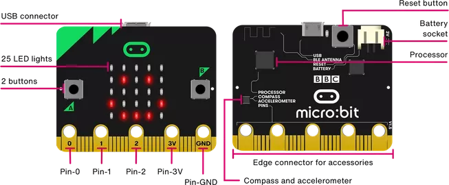
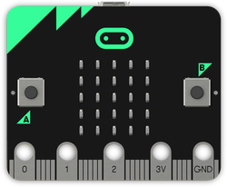
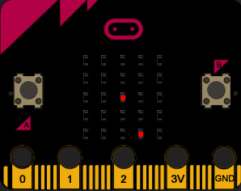
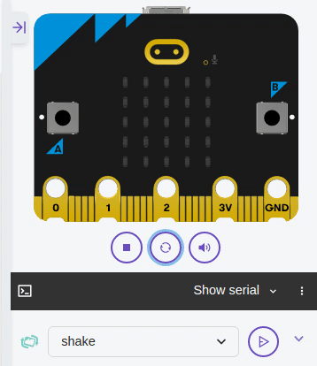

Objets connectés⚓︎
0. Présentation de la carte BBC micro:bit⚓︎
BBC micro:bit est une carte à microcontrôleur conçue en 2015 au Royaume-Uni pour développer l'apprentissage de l'algorithmique et de la programmation.

La carte micro:bit dispose des spécificités techniques suivantes :
- 25 LEDs programmables individuellement
- 2 boutons programmables
- Broches de connexion
- Capteurs de lumière et de température
- Capteurs de mouvements (accéléromètre et boussole)
- Communication sans fil, via Radio et Bluetooth
- Interface USB
1. "Hello world !", virtuellement ou IRL...⚓︎
1.1 À distance ? Pas de micro:bit ? le simulateur est là !⚓︎
Rendez-vous sur la page https://python.microbit.org/v/3
Effacez le code existant et collez-le code ci-dessous :
1 2 3 4 5 6 | |
Cliquez sur le bouton Play de la micro:bit virtuelle. C'est parti !

Pour éviter des erreurs, fermez la fenêtre de droite (le simulateur) à chaque fois que vous modifiez votre code de la partie gauche.
1.2 Avec une micro:bit réelle⚓︎
La manipulation suivante ne marche que sur le navigateur Google Chrome.
- Branchez la carte sur un port USB. Un lecteur MICROBIT apparait dans les périphériques USB.
- Rendez-vous sur l'adresse https://python.microbit.org/v/3
- Modifiez le code présent puis cliquez sur le bouton Play de la micro:bit virtuelle.
- Cliquer sur le bouton violet «Send to micro:bit».
Cette procédure est à répéter à chaque nouveau code.
2. Découverte des fonctionnalités⚓︎
2.1 Commandes de base de l'afficheur, matrice de 5x5 LEDs⚓︎
voir vidéo explicative (en anglais)
LED signifie Light Emitting Diode, Diode électroluminescente. La carte micro:bit en dispose de 25, toutes programmables individuellement, ce qui permet d'afficher du texte, des nombres et des images.
2.1.1 Afficher un texte "défilant" display.scroll(string, delay=400)⚓︎
1 2 | |
La première ligne de ce programme importe la bibliothèque de fonctions micro:bit. La deuxième ligne fait défiler un message à l’écran. Cela n'arrive qu'une seule fois.
La vitesse de défilement peut être ralentie ou accélérée à l'aide du paramètre delay. L'unité est la milliseconde.
1 2 | |
2.1.2 Afficher une "image" display.show(image)⚓︎
Exécuter le programme suivant:
1 2 | |
Liste des images disponibles
1 2 3 4 5 6 7 8 9 10 11 12 13 14 15 16 17 18 19 20 21 22 23 24 25 26 27 28 29 30 31 32 33 34 35 36 37 38 39 40 41 42 43 44 45 46 47 48 49 50 51 52 53 54 55 56 57 58 59 60 61 62 63 | |
Créer sa propre image⚓︎
Chaque pixel LED sur l’affichage physique peut prendre une parmi dix valeurs. Si un pixel prend la valeur 0 c’est qu’il est éteint. Littéralement, il a une luminosité de zéro. En revanche, s’il prend la valeur 9 il est à la luminosité maximale. Les valeurs de 1 à 8 représentent des niveaux de luminosité entre éteint (0) et « au maximum » (9).
1 2 3 4 5 6 7 8 9 | |
Comment dessiner une image? Chaque ligne de l’affichage physique est représentée par une ligne de nombres se terminant par : et entourée de guillemets doubles ". Chaque nombre indique une luminosité. Il y a cinq lignes de cinq nombres donc il est possible de spécifier la luminosité individuelle de chacune des cinq LED sur chacune des cinq lignes sur l’affichage physique. C’est ainsi que l'on crée une image.
2.1.3 Les pixels (display.set_pixel(x, y, val))⚓︎
Vous pouvez régler la luminosité des pixels de l'affichage individuellement de 0 (désactivé) à 9 (luminosité maximale). Pour des informations sur les coordonnées de l'affichage, voir le guide pour matrice à LED.
Exécuter le programme suivant:
1 2 | |
2.2 Boucle while⚓︎
Le programme suivant utilise une boucle while pour faire clignoter le pixel central de manière répétée sur l’écran. La boucle while se répète tant que la condition spécifiée est vraie (True). Dans ce cas, nous avons dit que la condition est vraie. Cela crée une boucle infinie.
L'instruction de veille sleep() provoque la pause du micro:bit pendant un nombre défini de millisecondes choisi entre parenthèses.
L'instruction display.clear() éteint l'affichage.
Exécuter le programme ci-dessous:
1 2 3 4 5 6 | |
Avec un peu d'aléatoire (voir documentation sur le hasard)⚓︎
Dans le programme suivant que vous exécuterez, on importe randint du module random de MicroPython et on l'utilise pour afficher un pixel au hasard sur la matrice.
L'instruction randint(0,4) va renvoyer un nombre (pseudo-)aléatoire entre 0 et 4 inclus.
1 2 3 4 5 | |
Tester le programme précédent plusieurs fois de suite. Pour cela, redémarrer la micro:bit en appuyant sur le bouton RESET situé à l'arrière de la carte.
2.3 Boucle for⚓︎
Le programme suivant utilise une boucle for pour faire défiler un pixel sur une ligne.
Grâce à l'expression for i in range(5):, la variable i va prendre successivement les valeurs 0, 1, 2, 3 et 4. (pas 5 !)
1 2 3 4 5 6 | |
2.4 Les entrées boutons A, B et A+B - programmation événementielle (vidéo explicative)⚓︎

Il y a deux boutons sur la face avant du micro:bit (étiquetés A et B). On peut détecter quand ces boutons sont pressés, ce qui permet de déclencher des instructions sur l'appareil.
Exemples avec le boutton A:
button_a.is_pressed(): renvoie True si le bouton spécifié est actuellement enfoncé et False sinon.button_a.was_pressed(): renvoie True ou False pour indiquer si le bouton a été appuyé depuis le démarrage de l'appareil ou la dernière fois que cette méthode a été appelée.
Exemple : Essayer le programme suivant qui fait défiler le texte "SNT" indéfiniment. On introduit l'instruction conditionnelle if qui va tester si le bouton A a été pressé (pendant le défilement du texte ou pendant la pause), auquel cas le programme s'arrête en exécutant la commande break.
1 2 3 4 5 6 7 8 | |
Exercice 1
Créer le code permettant de basculer d'un visage triste à un visage heureux suivant qu'on appuie sur A ou sur B.

1 2 3 4 5 6 | |
1 2 3 4 5 6 | |
Pour rajouter la gestion des 2 boutons simultanés:
1 2 3 4 5 6 7 8 | |
Exercice 2
On veut créer le code permettant de déplacer un point vers la gauche ou vers la droite en appuyant sur A ou sur B.

1 2 3 4 5 6 7 8 9 | |
1 2 3 4 5 6 7 8 9 | |
 nouveau site de simulation : https://python.microbit.org/v/3
nouveau site de simulation : https://python.microbit.org/v/3
Exercice 2 bis
Même chose mais en faisant parcourir tout l'écran au pixel :
- si on sort à droite, on se décale d'une ligne vers le bas et on revient tout à gauche.
- si on sort à gauche, on se décale d'une ligne vers le haut et on revient tout à droite.
1 2 3 4 5 6 7 8 9 10 11 12 13 14 15 16 17 18 19 20 21 22 | |
Exercice 3 : un jeu !
On veut créer le jeu suivant :
- au démarrage, un pixel aléatoire est placé sur l'écran.
- il faut ensuite se déplacer un point vers la gauche ou vers la droite en appuyant sur A ou sur B.
- lorsque qu'on a rejoint le point aléatoire, un emoji HAPPY apparait.

1 2 3 4 5 6 7 8 9 10 11 12 13 14 15 16 17 18 19 20 21 22 23 24 25 26 | |
1 2 3 4 5 6 7 8 9 10 11 12 13 14 15 16 17 18 19 20 21 22 23 24 25 26 27 28 29 30 31 32 33 34 35 36 37 | |
2.4.2 Un Pierre-Feuille-Ciseaux⚓︎
Exercice 4
Créer un jeu de Pierre-Feuille-Ciseaux qui se déclenchera lorsqu'on secoue la Microbit.

La détection du "secouage" de la carte se fera avec l'instruction suivante :
1 2 | |
1 2 3 4 5 6 7 8 9 10 11 12 13 14 15 16 17 18 19 | |
1 2 3 4 5 6 7 8 9 10 11 12 13 14 15 16 17 18 19 20 21 22 23 24 25 26 27 28 29 30 31 | |
 fin du programme de révision pour l'évaluation finale Moodle ⚓︎
fin du programme de révision pour l'évaluation finale Moodle ⚓︎
2.5 Capteur de lumière (vidéo)⚓︎
En inversant les LEDs d'un écran pour devenir un point d'entrée, l'écran LED devient un capteur de lumière basique, permettant de détecter la luminosité ambiante.
La commande display.read_light_level() retourne un entier compris entre 0 et 255 représentant le niveau de lumière.
Exercice : Compléter le programme ci-dessous qui affiche une image de lune si on baisse la luminosité (en recouvrant la carte avec sa main par exemple) et un soleil sinon.
1 2 3 4 5 6 7 8 9 10 11 12 13 14 15 16 17 18 19 20 | |
Prolongement: créer un programme qui affiche le niveau de luminosité et le tester avec la LED d'un téléphone portable ou une lampe-torche par exemple. Plus la luminosité sera élevée, plus il y aura de LEDs affichées sur la matrice.
2.6 Capteur de température (vidéo)⚓︎
Le micro:bit n’a pas un capteur de température dédié. Au lieu de cela, la température fournie est en fait la température de la puce de silicium du processeur principal. Comme le processeur chauffe peu en fonctionnement (c'est un processeur ARM à grande efficacité), sa température est une bonne approximation de la température ambiante.
L'instruction temperature() renvoie la température de la carte micro:bit en degrés Celsius.
Exercice : Ecrire un programme qui affiche la température (aide: on pourra utiliser l'instruction display.scroll(); revoir le point 2.1.1).
2.7 Accéléromètre (vidéo)⚓︎
Un accéléromètre mesure l'accélération de la carte micro:bit, ce composant détecte quand la micro:bit est en mouvement. Il peut aussi détecter d'autres actions (gestes), par exemple quand elle est secouée, inclinée ou qu'elle tombe.
La carte micro:bit est munie d’un accéléromètre. Il mesure le mouvement selon trois axes :
- X - l’inclinaison de gauche à droite.
- Y - l’inclinaison d’avant en arrière.
- Z - le mouvement haut et bas.
Dans l'exemple suivant à essayer, l'instruction accelerometer.get_x() permet de détecter un mouvement de gauche à droite en renvoyant un nombre compris entre -1023 et 1023; 0 étant la position "d'équilibre"
1 2 3 4 5 6 7 8 9 10 11 | |
Prolongement (secouer les dés!):
Exercice 4
Écrire un programme qui simule un dé en affichant une face au hasard lorsque la micro:bit est secouée. On pourra utiliser l'instruction accelerometer.is_gesture(shake) qui teste si la carte est secouée. Plus d'informations sur les gestes ici.
2.8 Boussole⚓︎
La boussole détecte le champ magnétique de la Terre, nous permettant de savoir quelle direction la micro:bit indique. La boussole doit être étalonnée avant de pouvoir être utilisée. Pour cela, on utilise compass.calibrate() qui exécute un petit jeu: au départ, micro:bit fait défiler "Tilt to fill screen". Ensuite, incliner micro:bit pour déplacer le point au centre de l’écran autour jusqu'à ce que vous ayez rempli la totalité de l’écran.
La fonction compass.heading() donne le cap de la boussole sous la forme d'un entier compris entre 0 et 360, représentant l'angle en degrés, dans le sens des aiguilles d'une montre, avec le nord égal à 0.
Exercice : Compléter le programme suivant qui indique le Nord.
1 2 3 4 5 6 7 8 9 | |
Prolongement: Améliorer le programme pour que le micro:bit indique "N", "S", "E" et "O" en fonction de l'orientation de la boussole.
Autre prolongement: fabriquer une station météo qui détermine la direction du vent.
Autre prolongement: étudier l'intensité du champ magnétique autour du périphérique (en utilisant la fonction compass.get_field_strength()). Plus d'informations sur les fonctions "boussole" ici.
document basé sur le travail de Thomas Basso, académie de Polynésie